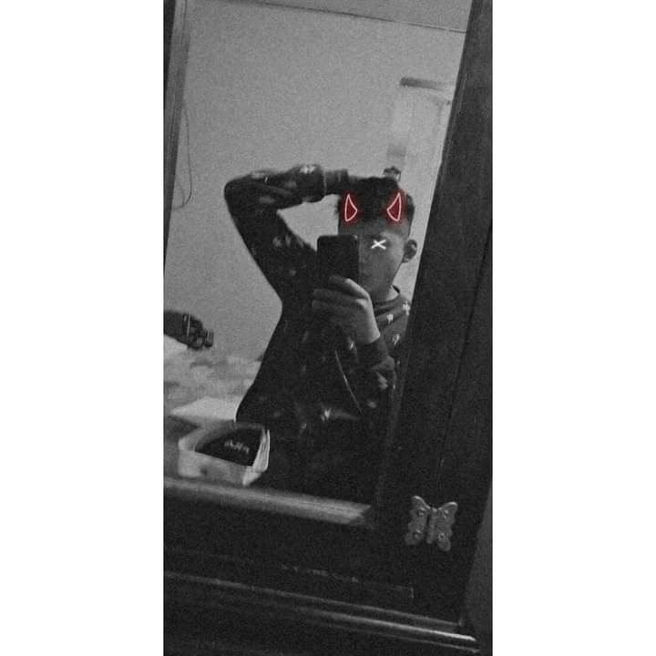

Angel Leonardo Romero Fuentes, nacio el 5 de Enero del 2005
en Chimalhuacán Estado de México.
Tiene 2 hermanos uno mayor y uno menor, le gusta cantar,
Práctico Karate por 3 años.
Entro a la primaria "Rosario Castellanos" participaba
en Coro y estudiantina
En nivel secundaria participaba en Festivales y Artes
Preparatoria hizo examen COMIPEMS quedó en cecytem nezahualcoyot 2
Planes a futuro entrar a la universidad,
desarrollarse en carrera de Artes.